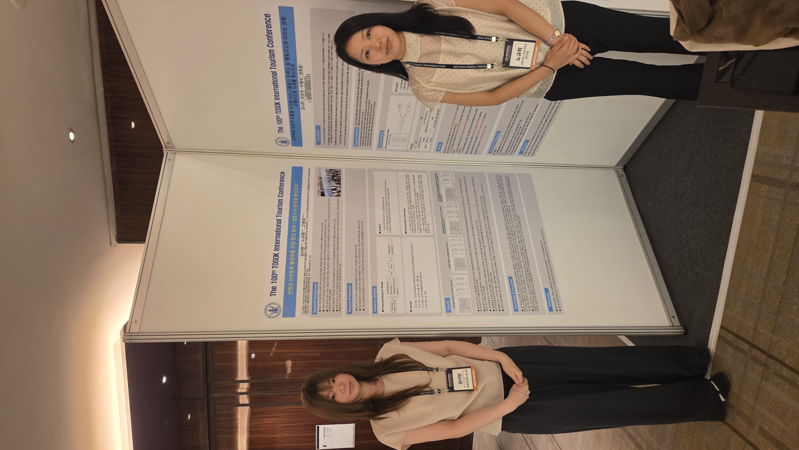
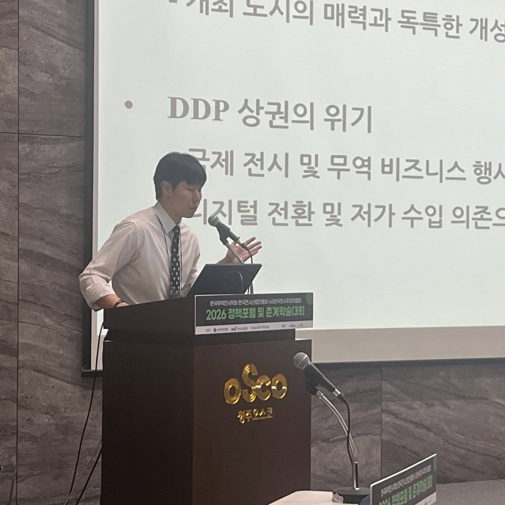
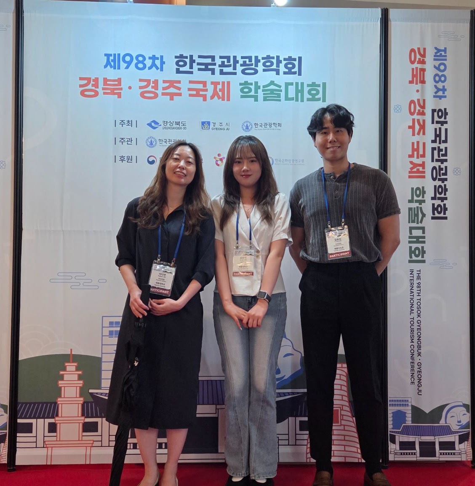
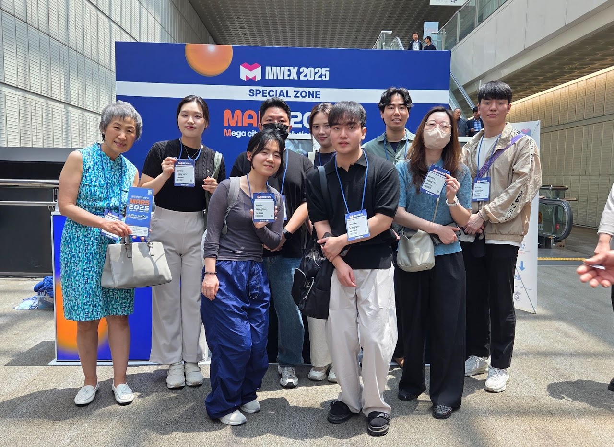
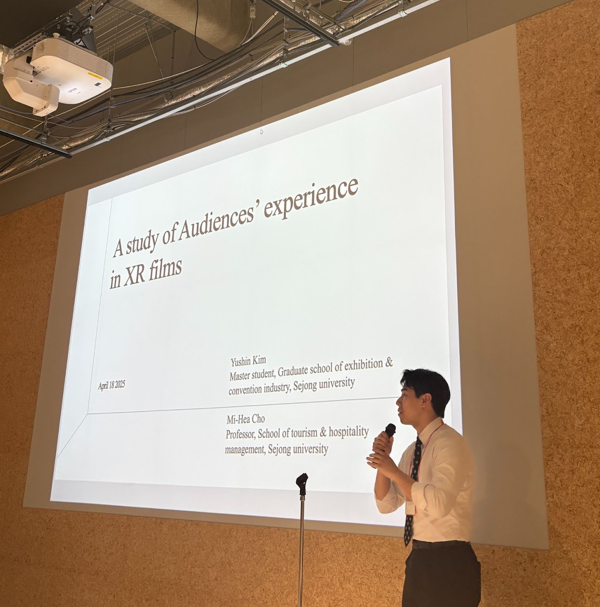
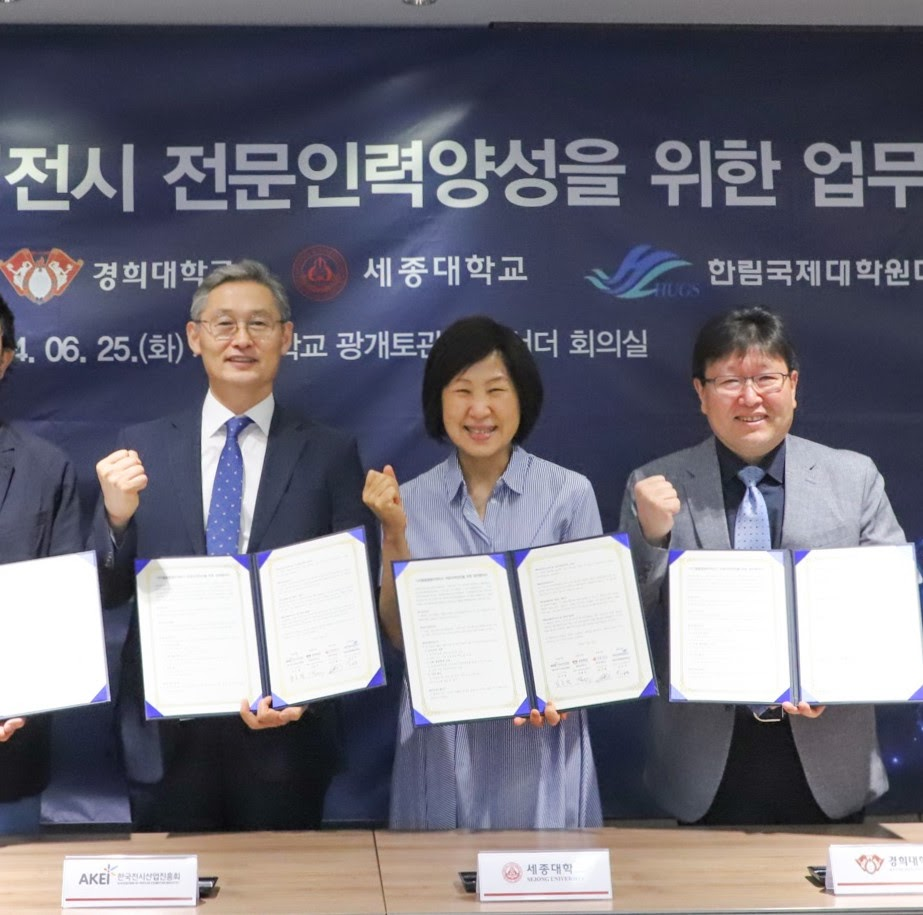

세종대학교 관광대학원전시컨벤션산업전공
전공 활동 기록
배움과 연구가 현장으로 이어지는 순간들
현장탐방, 연구 발표, 산학협력과 수상 소식을 최근 활동부터 살펴보세요.

항저우 첨단산업단지 방문 및 유관대학 학술교류
항저우의 전시 현장과 첨단산업 현장을 방문하고, 유관대학과 학술교류를 진행했습니다.
활동 자세히 보기 →
제100차 한국관광학회 서울국제학술대회 발표
구두발표와 포스터 발표를 통해 전시컨벤션 분야의 연구 성과를 공유했습니다.
활동 자세히 보기 →
한국무역전시학회 정책포럼 및 춘계학술대회 발표
전자부스 배치도 인식과 온라인 리뷰 분석을 주제로 연구 성과를 발표했습니다.
활동 자세히 보기 →
전시산업 디지털 융합 해커톤 참여·수상
전시산업에 적용할 디지털 융합 솔루션을 제안하고 최우수상·우수상·협력상을 수상했습니다.
활동 자세히 보기 →
제98차 한국관광학회 경북·경주 국제학술대회
전시컨벤션 분야의 길찾기 알고리즘, 디지털 경험, VR 콘텐츠 연구를 발표했습니다.
활동 자세히 보기 →
MVEX 단체 관람
디지털 기술의 발전 현황을 살펴보고 전시컨벤션 분야의 적용 가능성을 논의했습니다.
활동 자세히 보기 →
리츠메이칸 대학 학술 심포지엄 및 오사카 엑스포 방문
한일 전시·관광산업 성과교류회에서 연구를 발표하고 오사카 엑스포와 교토 국제회의장을 방문했습니다.
활동 자세히 보기 →
디지털융합형 무역전시 통합 세미나
디지털 기술과 AI를 활용한 컨벤션 경험 및 참여 증진 방안을 함께 살펴보았습니다.
활동 자세히 보기 →
디지털융합형무역전시 전문인력양성 업무협약
한국전시산업진흥회·경희대학교·한림국제대학원대학교와 전문인력양성 협력체계를 구축했습니다.
활동 자세히 보기 →